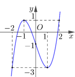
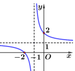

ĐỀ THI TOÁN - ĐỀ SỐ 25 HOT
Phần I: Trắc Nghiệm Nhiều Lựa Chọn
Tóm tắt kiến thức: Tính đơn điệu của hàm số
Hàm số đồng biến trên khoảng mà đạo hàm \( f'(x) > 0 \), nghịch biến khi \( f'(x) < 0 \). Dựa vào bảng xét dấu của \( f'(x) \).
Câu 1:
Cho hàm số \( y = f(x) \) có đạo hàm \( f'(x) = (x - 2)(x + 1), \forall x \in \mathbb{R} \). Mệnh đề nào dưới đây đúng?
Chọn đáp án:
Lời giải:
Ta có: \( f'(x) = (x - 2)(x + 1) = 0 \Leftrightarrow x = 2 \) hoặc \( x = -1 \).
Bảng xét dấu của \( f'(x) \):

Hàm số đồng biến trên \( (-\infty; -1) \) và \( (2; +\infty) \), nghịch biến trên \( (-1; 2) \).
Đáp án: D.
Tóm tắt kiến thức: Giá trị lớn nhất và nhỏ nhất
Giá trị nhỏ nhất của hàm số trên đoạn được xác định từ đồ thị hoặc các điểm cực trị và giá trị tại biên.
Câu 2:
Cho hàm số \( y = f(x) \) có đồ thị là đường cong trong hình vẽ. Giá trị nhỏ nhất của hàm số đã cho trên đoạn \([-2; 2]\) bằng:
Chọn đáp án:
Lời giải:
Quan sát đồ thị, hàm số đạt giá trị nhỏ nhất là \(-3\) tại \( x = -2 \) hoặc \( x = 1 \).
Trong các lựa chọn, \( f(1) = -3 \).
Đáp án: C.
Tóm tắt kiến thức: Tiệm cận xiên
Hàm số \( y = \frac{ax^2 + bx + c}{dx + e} \) có tiệm cận xiên \( y = mx + n \), với \( m = \lim_{x \to \infty} \frac{f(x)}{x} \), \( n = \lim_{x \to \infty} [f(x) - mx] \).
Câu 3:
Đường tiệm cận xiên của đồ thị hàm số \( f(x) = \frac{2x^2 - 3x + 1}{x + 1} \) có phương trình là:
Chọn đáp án:
Lời giải:
Biến đổi: \( f(x) = \frac{2x^2 - 3x + 1}{x + 1} = 2x - 5 + \frac{6}{x + 1} \).
Khi \( x \to \pm \infty \), \( \frac{6}{x + 1} \to 0 \), nên tiệm cận xiên là \( y = 2x - 5 \).
Đáp án: A.
Tóm tắt kiến thức: Hàm phân thức
Hàm phân thức \( y = \frac{ax + b}{cx + d} \) có tiệm cận đứng tại \( x = -\frac{d}{c} \), tiệm cận ngang \( y = \frac{a}{c} \), giao điểm với trục tung tại \( y = \frac{b}{d} \).
Câu 4:
Đường cong trong hình vẽ là đồ thị của hàm số nào dưới đây?
Chọn đáp án:
Lời giải:
Quan sát đồ thị:
- Tiệm cận ngang: \( y = 1 \).
- Tiệm cận đứng: \( x = -1 \).
- Giao điểm với trục tung: \( (0; 2) \).
Hàm \( y = \frac{x + 2}{x + 1} \):
- Tiệm cận ngang: \( \lim_{x \to \pm \infty} \frac{x + 2}{x + 1} = 1 \).
- Tiệm cận đứng: \( x + 1 = 0 \Rightarrow x = -1 \).
- Giao điểm với trục tung: \( y(0) = \frac{0 + 2}{0 + 1} = 2 \).
Thỏa mãn. Đáp án: D.
Tóm tắt kiến thức: Phép nhân vector với số thực
Vector \( k\vec{a} = (kx; ky; kz) \) nếu \( \vec{a} = (x; y; z) \).
Câu 5:
Trong không gian \( Oxyz \), cho vector \( \vec{a} = (-1; 0; 2) \). Mệnh đề nào dưới đây đúng?
Chọn đáp án:
Lời giải:
\( 2\vec{a} = 2(-1; 0; 2) = (-2; 0; 4) \).
Đáp án: C.
Tóm tắt kiến thức: Phương trình mặt phẳng
Mặt phẳng đi qua điểm \( A(x_0; y_0; z_0) \), có vector pháp tuyến \( \vec{n} = (a; b; c) \), có phương trình: \( a(x - x_0) + b(y - y_0) + c(z - z_0) = 0 \).
Câu 6:
Trong không gian \( Oxyz \), cho đường thẳng \( d: \frac{x - 1}{2} = \frac{y + 1}{1} = \frac{z}{-3} \). Mặt phẳng \( (P) \) đi qua điểm \( A(1; 0; 1) \) và vuông góc với đường thẳng \( d \). Phương trình mặt phẳng \( (P) \) là:
Chọn đáp án:
Lời giải:
Đường thẳng \( d \) có vector chỉ phương \( \vec{u}_d = (2; 1; -3) \).
Mặt phẳng \( (P) \) vuông góc với \( d \), nên vector pháp tuyến của \( (P) \) là \( \vec{u}_d = (2; 1; -3) \).
\( (P) \) đi qua \( A(1; 0; 1) \), phương trình: \( 2(x - 1) + 1(y - 0) - 3(z - 1) = 0 \).
Rút gọn: \( 2x + y - 3z + 1 = 0 \).
Đáp án: A.
Tóm tắt kiến thức: Mặt cầu
Mặt cầu \( x^2 + y^2 + z^2 + 2ax + 2by + 2cz + d = 0 \) có tâm \( (-a; -b; -c) \).
Câu 7:
Trong không gian \( Oxyz \), cho mặt cầu \( (S): x^2 + y^2 + z^2 - 2x + 2y - 6 = 0 \). Tọa độ tâm \( I \) của mặt cầu \( (S) \) đã cho là:
Chọn đáp án:
Lời giải:
Phương trình mặt cầu: \( (x - 1)^2 + (y + 1)^2 + z^2 = 8 \).
Tâm: \( I(1; -1; 0) \).
Đáp án: A.
Tóm tắt kiến thức: Khoảng tứ phân vị
Khoảng tứ phân vị: \( \Delta_Q = Q_3 - Q_1 \), với \( Q_1 \) và \( Q_3 \) là tứ phân vị thứ nhất và thứ ba, tính dựa trên tần số tích lũy.
Câu 8:
Một người thống kê lại thời gian thực hiện các cuộc gọi điện thoại của người đó trong một tuần ở bảng sau. Khoảng tứ phân vị của mẫu số liệu ghép nhóm trên bằng:
| Thời gian (giây) | \([0; 60)\) | \([60; 120)\) | \([120; 180)\) | \([180; 240)\) | \([240; 300)\) | \([300; 360)\) |
|---|---|---|---|---|---|---|
| Số cuộc gọi | 9 | 9 | 5 | 7 | 2 | 1 |
Chọn đáp án:
Lời giải:
Tổng số cuộc gọi: \( n = 9 + 9 + 5 + 7 + 2 + 1 = 33 \).
Tần số tích lũy: \([0; 60): 9\), \([60; 120): 18\), \([120; 180): 23\), \([180; 240): 30\), \([240; 300): 32\), \([300; 360): 33\).
Tứ phân vị thứ nhất: \( Q_1 = \frac{x_8 + x_9}{2} \in [0; 60) \), \( Q_1 = 0 + \frac{\frac{1}{4} \cdot 33}{9} \cdot 60 \approx 56 \).
Tứ phân vị thứ ba: \( Q_3 = \frac{x_{25} + x_{26}}{2} \in [180; 240) \), \( Q_3 = 180 + \frac{\frac{3}{4} \cdot 33 - 23}{7} \cdot 60 \approx 195 \).
Khoảng tứ phân vị: \( \Delta_Q = Q_3 - Q_1 = 195 - 56 = 139 \).
Đáp án: B.
Tóm tắt kiến thức: Tích phân
Tính tích phân \( \int_a^b kf(x) dx = k \int_a^b f(x) dx \).
Câu 9:
Nếu \( \int_1^2 f(x) dx = 5 \), thì \( \int_{-1}^2 4f(x) dx \) bằng:
Chọn đáp án:
Lời giải:
\( \int_{-1}^2 4f(x) dx = 4 \int_{-1}^2 f(x) dx \).
\( \int_{-1}^1 f(x) dx = k \), \( \int_{-1}^2 f(x) dx = \int_{-1}^1 f(x) dx + \int_1^2 f(x) dx = k + 5 \).
Đáp án: A.
Tóm tắt kiến thức: Thể tích khối chóp
Thể tích khối chóp: \( V = \frac{1}{3}Bh \), với \( B \) là diện tích đáy, \( h \) là chiều cao.
Câu 10:
Thể tích của khối chóp có diện tích đáy \( B = 6 \) và chiều cao \( h = 3 \) bằng:
Chọn đáp án:
Lời giải:
Thể tích: \( V = \frac{1}{3} \cdot 6 \cdot 3 = 6 \).
Đáp án: A.
Tóm tắt kiến thức: Cấp số nhân
Cấp số nhân: \( u_n = u_1 \cdot q^{n-1} \), với \( q \) là công bội.
Câu 11:
Cho cấp số nhân \( (u_n) \) có số hạng đầu \( u_1 = 7 \) và công bội \( q = 3 \). Khi đó số hạng thứ hai của cấp số nhân đã cho là:
Chọn đáp án:
Lời giải:
Số hạng thứ hai: \( u_2 = u_1 \cdot q = 7 \cdot 3 = 21 \).
Đáp án: A.
Tóm tắt kiến thức: Phương trình lũy thừa
Phương trình \( a^x = b \Rightarrow x = \log_a b \).
Câu 12:
Nghiệm của phương trình \( 2^x = 6 \) là:
Chọn đáp án:
Lời giải:
\( 2^x = 6 \Rightarrow x = \log_2 6 \).
Đáp án: C.
Phần II: Trắc Nghiệm Đúng/Sai
Tóm tắt kiến thức: Hàm số lượng giác
Đạo hàm: \( \frac{d}{dx}(\cos x) = -\sin x \). Giá trị lớn nhất, nhỏ nhất của hàm số tìm bằng đạo hàm và giá trị tại biên.
Câu 13:
Cho hàm số \( f(x) = 2\cos x + x\sqrt{2} \). Xét các phát biểu sau:
Chọn đáp án cho từng phát biểu:
a)
b)
c)
d)
Lời giải:
a) \( f(0) = 2\cos 0 + 0 = 2 \), \( f(\pi) = 2\cos \pi + \pi\sqrt{2} = -2 + \pi\sqrt{2} \). Đúng.
b) \( f'(x) = -2\sin x + \sqrt{2} \neq 2\sin x + \sqrt{2} \). Sai.
c) \( f'(x) = -2\sin x + \sqrt{2} = 0 \Rightarrow \sin x = \frac{\sqrt{2}}{2} \Rightarrow x = \frac{\pi}{4}, \frac{3\pi}{4} \). Đúng.
d) Giá trị tại \( x = 0 \): \( f(0) = 2 \).
Tại \( x = \pi \): \( f(\pi) \approx 2.44 \).
Tại \( x = \frac{\pi}{4} \): \( f\left(\frac{\pi}{4}\right) \approx 2.52 \) (max).
Tại \( x = \frac{3\pi}{4} \): \( f\left(\frac{3\pi}{4}\right) \approx 1.92 \) (min).
Tổng: \( M + m \approx 2.52 + 1.92 = \pi\sqrt{2} \approx 4.44 \). Đúng.
Đáp án: a) Đúng, b) Sai, c) Đúng, d) Đúng.
Tóm tắt kiến thức: Giao của đường thẳng và mặt cầu
Đường thẳng cắt mặt cầu tại hai điểm nếu khoảng cách từ tâm đến đường thẳng nhỏ hơn bán kính. Diện tích tam giác được tính từ độ dài các cạnh.
Câu 14:
Trong không gian \( Oxyz \), cho đường thẳng \( \Delta: \begin{cases} x = -1 + t \\ y = -2 + 2t \\ z = -3 + 2t \end{cases} \) và mặt cầu \( (S): (x - 3)^2 + y^2 + (z - 2)^2 = 25 \). Gọi \( I \) là tâm của mặt cầu \( (S) \). Xét các phát biểu sau:
Chọn đáp án cho từng phát biểu:
a)
b)
c)
d)
Lời giải:
a) Mặt cầu \( (S): (x - 3)^2 + y^2 + (z - 2)^2 = 25 \), tâm \( I(3; 0; 2) \), \( R = 5 \). Sai.
b) Thay \( M(-2; -4; -6) \) vào \( \Delta \): \( -2 = -1 + t \Rightarrow t = -1 \), \( -4 = -2 + 2(-1) \), \( -6 \neq -3 + 2(-1) \). Sai.
c) Hình chiếu \( H(-1 + t; -2 + 2t; -3 + 2t) \), \( \overrightarrow{IH} = (-4 + t; -2 + 2t; -5 + 2t) \), \( \overrightarrow{u_\Delta} = (1; 2; 2) \).
\( \overrightarrow{IH} \cdot \overrightarrow{u_\Delta} = 0 \Rightarrow t = 2 \Rightarrow H(1; 2; 1) \neq (1; 2; -1) \). Sai.
d) \( IH = \sqrt{(-2)^2 + 2^2 + (-1)^2} = 3 < R \Rightarrow \Delta \) cắt \( (S) \) tại \( A, B \).
\( AH = \sqrt{IA^2 - IH^2} = 4 \Rightarrow AB = 2AH = 8 \).
Diện tích: \( S_{\Delta IAB} = \frac{1}{2} \cdot IH \cdot AB = \frac{1}{2} \cdot 3 \cdot 8 = 12 \). Đúng.
Đáp án: a) Sai, b) Sai, c) Sai, d) Đúng.
Tóm tắt kiến thức: Ứng dụng tích phân
Tích phân \( \int_a^b f(t) dt \) biểu thị tổng lượng thay đổi, ví dụ: số ngày công từ số lượng công nhân mỗi ngày.
Câu 15:
Một công trình xây dựng dự kiến hoàn thành trong 100 ngày. Gọi \( M(t) \) là số ngày công được tính đến hết ngày thứ \( t \). Biết rằng \( M'(t) = m(t) \), với \( m(t) = 100 + 12\sqrt{t} - 2t \) (\( 0 \leq t \leq 100 \)) là số lượng công nhân được sử dụng tại thời điểm \( t \). Xét các phát biểu sau:
Chọn đáp án cho từng phát biểu:
a)
b)
c)
d)
Lời giải:
a) \( m(4) = 100 + 12\sqrt{4} - 2 \cdot 4 = 100 + 24 - 8 = 116 \). Đúng.
b) \( m'(t) = \frac{6}{\sqrt{t}} - 2 = 0 \Rightarrow \sqrt{t} = 3 \Rightarrow t = 9 \). Số công nhân nhiều nhất tại \( t = 9 \), không phải 10. Sai.
c) \( M(16) = \int_0^{16} (100 + 12\sqrt{t} - 2t) dt = \left[ 100t + 8t^{\frac{3}{2}} - t^2 \right]_0^{16} = 1856 \). Đúng.
d) \( M(100) = \int_0^{100} (100 + 12\sqrt{t} - 2t) dt = \left[ 100t + 8t^{\frac{3}{2}} - t^2 \right]_0^{100} = 8000 \).
Tổng tiền: \( 8000 \cdot 500,000 = 4,000,000,000 \) đồng = 4 tỷ đồng. Đúng.
Đáp án: a) Đúng, b) Sai, c) Đúng, d) Đúng.
Tóm tắt kiến thức: Xác suất có điều kiện
Xác suất toàn phần: \( P(B) = P(B|A)P(A) + P(B|\bar{A})P(\bar{A}) \). Công thức Bayes: \( P(A|B) = \frac{P(B|A)P(A)}{P(B)} \).
Câu 16:
Một căn bệnh \( X \) có 4% dân số mắc phải. Một phương pháp chẩn đoán bệnh \( X \) có tỷ lệ chính xác 99%. Với những người bị bệnh, phương pháp này cho kết quả dương tính 99% số trường hợp. Với những người không mắc bệnh, phương pháp chẩn đoán đúng 98%. Chọn ngẫu nhiên một người đi kiểm tra bệnh \( X \) bằng phương pháp trên. Xét các phát biểu sau:
Chọn đáp án cho từng phát biểu:
a)
b)
c)
Lời giải:
Gọi \( A \): mắc bệnh, \( B \): kết quả dương tính.
\( P(A) = 0.04 \), \( P(\bar{A}) = 0.96 \), \( P(B|A) = 0.99 \), \( P(\bar{B}|\bar{A}) = 0.98 \Rightarrow P(B|\bar{A}) = 0.02 \).
a) \( P(A) = 0.04 \). Đúng.
b) \( P(B) = P(B|A)P(A) + P(B|\bar{A})P(\bar{A}) = 0.99 \cdot 0.04 + 0.02 \cdot 0.96 = 0.0588 \). Đúng.
c) \( P(A|B) = \frac{P(B|A)P(A)}{P(B)} = \frac{0.99 \cdot 0.04}{0.0588} \approx 0.6735 \neq 0.6 \). Sai.
Đáp án: a) Đúng, b) Đúng, c) Sai.
Phần III: Trắc Nghiệm Trả Lời Ngắn
Tóm tắt kiến thức: Khoảng cách trong không gian
Khoảng cách từ điểm đến mặt phẳng là độ dài đoạn vuông góc từ điểm đến mặt phẳng, tính bằng công thức khoảng cách hoặc hình chiếu.
Câu 17:
Cho hình chóp \( S.ABCD \) có đáy là hình chữ nhật cạnh \( AB = 2AD = 2 \). Tam giác \( SAB \) đều và nằm trong mặt phẳng vuông góc với đáy \( (ABCD) \). Tính khoảng cách từ \( A \) đến mặt phẳng \( (SBD) \) (làm tròn kết quả đến chữ số thập phân thứ hai).
Nhập đáp án:
Lời giải:
Gọi \( I \) là trung điểm \( AB \Rightarrow SI \perp AB \), \( SI \perp (ABCD) \).
Trong \( \triangle SAB \) đều, cạnh \( AB = 2 \Rightarrow SI = \sqrt{3} \).
Trong \( \triangle BAD \), \( AB = 2 \), \( AD = 1 \), \( AK \perp BD \), \( \frac{1}{AK^2} = \frac{1}{AB^2} + \frac{1}{AD^2} = \frac{5}{4} \Rightarrow AK = \frac{2\sqrt{5}}{5} \).
\( JI \perp BD \Rightarrow JI = \frac{1}{2}AK = \frac{\sqrt{5}}{5} \), \( BD \perp SI \Rightarrow BD \perp (SJI) \).
\( HI \perp SJ \Rightarrow IH \perp (SBD) \), \( \frac{1}{IH^2} = \frac{1}{JI^2} + \frac{1}{SI^2} = 5 + \frac{1}{3} = \frac{16}{3} \Rightarrow IH = \frac{\sqrt{3}}{4} \).
\( d(A; (SBD)) = 2 \cdot d(I; (SBD)) = 2 \cdot \frac{\sqrt{3}}{4} = \frac{\sqrt{3}}{2} \approx 0.87 \).
Đáp án: 0.87.
Tóm tắt kiến thức: Bài toán đường đi ngắn nhất
Tìm đường đi ngắn nhất bằng cách liệt kê và tính tổng khoảng cách các đường đi có thể.
Câu 18:
Trong một mật trò chơi, người chơi muốn tìm đường đi đúng nhất để đi từ \( A \) đến \( P \), biết từ \( A \) đến \( P \) có những đường đi như hình vẽ và khoảng cách giữa các vị trí được cho trên hình. Đường đi thỏa mãn điều kiện trên nhận giá trị nhỏ nhất là bao nhiêu?

Nhập đáp án:
Lời giải:
Các đường đi từ \( A \) đến \( P \):
- \( ABCMNP \), \( ABMNP \), \( ABNMP \), \( ACBMNP \), \( ACBMP \), \( ACBNMP \), \( ACBNP \), \( ACNMP \), \( ACMP \).
Tính tổng khoảng cách, đường đi ngắn nhất là \( ACMP \) với độ dài 21.
Đáp án: 21.
Tóm tắt kiến thức: Diện tích hình phẳng
Diện tích phần giới hạn bởi các đường cong được tính bằng tích phân: \( S = \int_a^b |f(x) - g(x)| dx \).
Câu 19:
Một tấm kính làm mặt bàn có hình dáng tam giác đều với 3 đỉnh được làm cong. Biết cạnh tấm kính tam giác ban đầu bằng 12 (dm). Để cắt góc được đẹp, người ta dùng đường parabol \( y = -\frac{\sqrt{3}}{4}x^2 + 5\sqrt{3} \), có hai nhánh tiếp giáp với hai cạnh của tam giác. Tính diện tích mặt kính (kết quả được làm tròn đến hàng phần chục).
Nhập đáp án:
Lời giải:
Diện tích tam giác \( ABC \): \( S_{\triangle ABC} = 12^2 \cdot \frac{\sqrt{3}}{4} = 36\sqrt{3} \).
Phương trình \( AC \): \( y = -\sqrt{3}x + 6\sqrt{3} \).
Giao điểm của parabol và \( AC \): \( x = 2 \).
Diện tích phần cắt: \( S = \int_0^2 \left[ (-\sqrt{3}x + 6\sqrt{3}) - \left(-\frac{\sqrt{3}}{4}x^2 + 5\sqrt{3}\right) \right] dx = \frac{2\sqrt{3}}{3} \).
Diện tích kính: \( S_{\triangle ABC} - 6S = 36\sqrt{3} - 4\sqrt{3} = 32\sqrt{3} \approx 55.4 \, \text{dm}^2 \).
Đáp án: 55.4.
Tóm tắt kiến thức: Giao của đường thẳng và mặt cầu
Khoảng cách giữa hai điểm giao của đường thẳng và mặt cầu được tính bằng phương trình tham số và phương trình mặt cầu.
Câu 20:
Trong không gian hệ trục tọa độ \( Oxyz \) (đơn vị trên mỗi trục là kilomet), đài kiểm soát không lưu sân bay Cam Ranh - Khánh Hòa ở vị trí \( O(0; 0; 0) \) và được thiết kế phát hiện máy bay ở khoảng cách tối đa 600 km. Một máy bay của hãng Vietnam Airlines đang chuyển động theo đường thẳng \( d: \begin{cases} x = -1000 + 100t \\ y = -200 + 80t \\ z = 10 \end{cases} \) và hướng về đài kiểm soát không lưu. Xác định quãng đường mà máy bay nhận được tín hiệu của đài kiểm soát không lưu (làm tròn kết quả đến hàng đơn vị, đơn vị km).
Nhập đáp án:
Lời giải:
Mặt cầu: \( x^2 + y^2 + z^2 = 600^2 \).
Thay \( d \): \( (100t - 1000)^2 + (80t - 200)^2 + 10^2 = 600^2 \).
Giải: \( 16400t^2 - 232000t + 680100 = 0 \Rightarrow t \approx 10 \) (điểm \( A(0; 600; 10) \)), \( t \approx 4.15 \) (điểm \( B(-585; 132; 10) \)).
Quãng đường: \( AB = \sqrt{(-585)^2 + (132 - 600)^2} \approx 749 \, \text{km} \).
Đáp án: 749.
Tóm tắt kiến thức: Tối ưu hóa khoảng cách
Tìm điểm trên đồ thị sao cho khoảng cách đến đường thẳng là nhỏ nhất bằng cách tối ưu hàm khoảng cách.
Câu 21:
Một hồ nuôi nhân tạo được giới hạn bởi các trục tọa độ và đồ thị hàm số \( y = \frac{1}{10}(-x^3 + 9x^2 - 15x + 56) \). Trong công viên có một con đường chạy dọc theo bờ hồ có phương trình \( y = -1.5x + 18 \). Người ta định xây dựng trên bờ hồ một bến thuyền đạp nước sao cho khoảng cách từ bến thuyền đến con đường này là ngắn nhất. Hoành độ của điểm để xây dựng bến thuyền này là bao nhiêu?
Nhập đáp án:
Lời giải:
Điểm \( M(x; f(x)) \), \( f(x) = \frac{1}{10}(-x^3 + 9x^2 - 15x + 56) \), \( 0 \leq x \leq 8 \).
Khoảng cách: \( MH = \frac{|-1.5x - f(x) + 18|}{\sqrt{(-1.5)^2 + 1}} = \frac{|x^3 - 9x^2 + 124|}{10\sqrt{3.25}} \).
Xét \( h(x) = x^3 - 9x^2 + 124 \), \( h'(x) = 3x^2 - 18x = 0 \Rightarrow x = 0, 6 \).
Bảng biến thiên cho thấy \( h(x) > 0 \), min tại \( x = 6 \), \( h(6) = 16 \).
\( \min MH = \frac{16}{10\sqrt{3.25}} \approx 0.8875 \) tại \( x = 6 \).
Đáp án: 6.
Tóm tắt kiến thức: Xác suất tổ hợp
Xác suất của sự kiện là tổng xác suất của các trường hợp thỏa mãn, sử dụng tổ hợp để tính số cách.
Câu 22:
Có hai lô hàng. Lô 1: Có 7 chính phẩm và 3 phế phẩm. Lô 2: Có 8 chính phẩm và 2 phế phẩm. Từ lô thứ nhất lấy ra 2 sản phẩm, từ lô thứ hai lấy ra 3 sản phẩm, rồi trong số sản phẩm lấy được, tính xác suất để lấy ra ít nhất 1 chính phẩm (làm tròn đến hai chữ số thập phân).
Nhập đáp án:
Lời giải:
Gọi \( A \): lấy được ít nhất 1 chính phẩm, \( \bar{A} \): lấy toàn phế phẩm.
Các trường hợp:
- \( H_1 \): 2 sản phẩm từ lô 2, \( P(H_1) = \frac{C_2^2}{C_5^2} = \frac{1}{10} \), \( P(\bar{A}|H_1) = \frac{C_3^2}{C_{10}^2} = \frac{3}{45} \).
- \( H_2 \): 3 sản phẩm từ lô 2, \( P(H_2) = \frac{C_3^2}{C_5^2} = \frac{3}{10} \), \( P(\bar{A}|H_2) = \frac{C_2^2}{C_{10}^2} = \frac{1}{45} \).
- \( H_3 \): 1 sản phẩm từ lô 1, 1 từ lô 2, \( P(H_3) = \frac{C_1^1 C_1^1}{C_5^2} = \frac{3}{5} \), \( P(\bar{A}|H_3) = \frac{C_3^1}{10} \cdot \frac{C_2^1}{10} = 0.06 \).
\( P(\bar{A}) = \frac{1}{10} \cdot \frac{3}{45} + \frac{3}{10} \cdot \frac{1}{45} + \frac{3}{5} \cdot 0.06 = \frac{37}{750} \).
\( P(A) = 1 - \frac{37}{750} \approx 0.95 \).
Đáp án: 0.95.